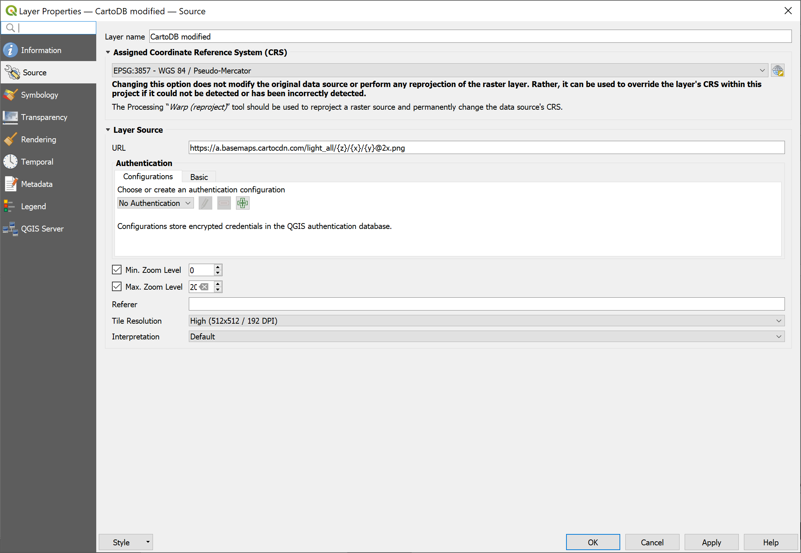

layout: true .toc.banner[ .shorttitle[ [ГИС аспирантура](break.html#home) ] ] --- name: home class: metadata customtitle middle left giphy .toc.sidebar.left-column[ .outline[ ## [QGIS Модуль QuickMapServices ](#Hce996) ## [Просмотр исходных данных ](#H83d6b) ## [Earth Engine](#EarthEngine) ## [Портативные GPS](#GPS) ] ] .toc.mainbar.right-column.scrollable[ .authors[ .author[Никита Платонов] .institute[с.н.с. ИПЭЭ РАН] ] .title[ Вопросы и ответы ] .subtitle[ ГИС технологии в биологических исследованиях ] .what[ Занятие 07 ] .where[ ] .when[ .updated[Обновлено: 2025-03-27 13:23] ] ] --- class: middle Вопросы обучающихся, появляющиеся во время занятий, работы над домашними заданиями. Здесь приведены возможные решения. --- name: Hce996 .toc.sidebar.left-column[ .outline[ ## [QGIS Модуль QuickMapServices ](#Hce996) <span class="bullet bullet-active">[•](#Hce996)</span><span class="bullet mslide5m">[•](#source)</span><span class="bullet mslide6m">[•](#H357b5)</span><span class="bullet mslide7m">[•](#H427c6)</span><span class="bullet mslide8m">[•](#modified)</span><span class="bullet mslide9m">[•](#Ha5c44)</span><span class="bullet mslide10m">[•](#voyager)</span><span class="bullet mslide11m">[•](#Hbe844)</span><span class="bullet mslide12m">[•](#H278d1)</span>.fg[].bg[] ## [Просмотр исходных данных ](#H83d6b) ## [Earth Engine](#EarthEngine) ## [Портативные GPS](#GPS) ] ] .toc.mainbar.right-column.scrollable[ .header.h2.broad[ QGIS Модуль QuickMapServices ] .fixprecode[ <img src="assets/lesson07/../QGIS/01%20%D0%98%D0%BD%D1%82%D0%B5%D1%80%D1%84%D0%B5%D0%B9%D1%81%20%D0%BF%D0%BE%D0%BB%D1%8C%D0%B7%D0%BE%D0%B2%D0%B0%D1%82%D0%B5%D0%BB%D1%8F/03%20Specific/QGIS-Specific-05-Plugins.png" width="1330" height="700" bound style="display: block; margin: auto auto auto 0;" /> Установить, обновить. В настройка модуля загрузить "Contributive Pack". ] ] --- name: source .toc.sidebar.left-column[ .outline[ ## [QGIS Модуль QuickMapServices ](#Hce996) <span class="bullet bullet">[•](#Hce996)</span><span class="bullet bullet-active">[•](#source)</span><span class="bullet mslide6m">[•](#H357b5)</span><span class="bullet mslide7m">[•](#H427c6)</span><span class="bullet mslide8m">[•](#modified)</span><span class="bullet mslide9m">[•](#Ha5c44)</span><span class="bullet mslide10m">[•](#voyager)</span><span class="bullet mslide11m">[•](#Hbe844)</span><span class="bullet mslide12m">[•](#H278d1)</span>.fg[].bg[] ## [Просмотр исходных данных ](#H83d6b) ## [Earth Engine](#EarthEngine) ## [Портативные GPS](#GPS) ] ] .toc.mainbar.right-column.scrollable[ .header.h2.broad[ QGIS Модуль QuickMapServices ] .fixprecode[ <img src="assets/lesson07/Positron-Original.png" width="1330" height="700" bound style="display: block; margin: auto auto auto 0;" /> Мелкие буквы и объекты. См. [исправление](#modified) ] ] --- name: H357b5 .toc.sidebar.left-column[ .outline[ ## [QGIS Модуль QuickMapServices ](#Hce996) <span class="bullet bullet">[•](#Hce996)</span><span class="bullet bullet">[•](#source)</span><span class="bullet bullet-active">[•](#H357b5)</span><span class="bullet mslide7m">[•](#H427c6)</span><span class="bullet mslide8m">[•](#modified)</span><span class="bullet mslide9m">[•](#Ha5c44)</span><span class="bullet mslide10m">[•](#voyager)</span><span class="bullet mslide11m">[•](#Hbe844)</span><span class="bullet mslide12m">[•](#H278d1)</span>.fg[].bg[] ## [Просмотр исходных данных ](#H83d6b) ## [Earth Engine](#EarthEngine) ## [Портативные GPS](#GPS) ] ] .toc.mainbar.right-column.scrollable[ .header.h2.broad[ QGIS Модуль QuickMapServices ] .fixprecode[ <img src="assets/lesson07/Positron-Settings.png" width="1330" height="700" bound style="display: block; margin: auto auto auto 0;" /> Открываем свойства слоя и вкладку источника данных ] ] --- name: H427c6 .toc.sidebar.left-column[ .outline[ ## [QGIS Модуль QuickMapServices ](#Hce996) <span class="bullet bullet">[•](#Hce996)</span><span class="bullet bullet">[•](#source)</span><span class="bullet bullet">[•](#H357b5)</span><span class="bullet bullet-active">[•](#H427c6)</span><span class="bullet mslide8m">[•](#modified)</span><span class="bullet mslide9m">[•](#Ha5c44)</span><span class="bullet mslide10m">[•](#voyager)</span><span class="bullet mslide11m">[•](#Hbe844)</span><span class="bullet mslide12m">[•](#H278d1)</span>.fg[].bg[] ## [Просмотр исходных данных ](#H83d6b) ## [Earth Engine](#EarthEngine) ## [Портативные GPS](#GPS) ] ] .toc.mainbar.right-column.scrollable[ .header.h2.broad[ QGIS Модуль QuickMapServices ] .fixprecode[  + Меняем URL, добавляя "@2x" и предпочитая https:// + Задаем разрешение тайлов (192 DPI) ] ] --- name: modified .toc.sidebar.left-column[ .outline[ ## [QGIS Модуль QuickMapServices ](#Hce996) <span class="bullet bullet">[•](#Hce996)</span><span class="bullet bullet">[•](#source)</span><span class="bullet bullet">[•](#H357b5)</span><span class="bullet bullet">[•](#H427c6)</span><span class="bullet bullet-active">[•](#modified)</span><span class="bullet mslide9m">[•](#Ha5c44)</span><span class="bullet mslide10m">[•](#voyager)</span><span class="bullet mslide11m">[•](#Hbe844)</span><span class="bullet mslide12m">[•](#H278d1)</span>.fg[].bg[] ## [Просмотр исходных данных ](#H83d6b) ## [Earth Engine](#EarthEngine) ## [Портативные GPS](#GPS) ] ] .toc.mainbar.right-column.scrollable[ .header.h2.broad[ QGIS Модуль QuickMapServices ] .fixprecode[ <img src="assets/lesson07/Positron-Modified.png" width="1330" height="700" bound style="display: block; margin: auto auto auto 0;" /> См. по-умолчанию ([оригинал](#source)) и [стиль "Voyager"](#voyager) ] ] --- name: Ha5c44 .toc.sidebar.left-column[ .outline[ ## [QGIS Модуль QuickMapServices ](#Hce996) <span class="bullet bullet">[•](#Hce996)</span><span class="bullet bullet">[•](#source)</span><span class="bullet bullet">[•](#H357b5)</span><span class="bullet bullet">[•](#H427c6)</span><span class="bullet bullet">[•](#modified)</span><span class="bullet bullet-active">[•](#Ha5c44)</span><span class="bullet mslide10m">[•](#voyager)</span><span class="bullet mslide11m">[•](#Hbe844)</span><span class="bullet mslide12m">[•](#H278d1)</span>.fg[].bg[] ## [Просмотр исходных данных ](#H83d6b) ## [Earth Engine](#EarthEngine) ## [Портативные GPS](#GPS) ] ] .toc.mainbar.right-column.scrollable[ .header.h2.broad[ QGIS Модуль QuickMapServices ] .fixprecode[ <img src="assets/lesson07/Voyager-Settings.png" width="1330" height="700" bound style="display: block; margin: auto auto auto 0;" /> Можно заменить URL частично или полностью. Здесь оставлен пройвайдер CartoDB, но заменен стиль. ] ] --- name: voyager .toc.sidebar.left-column[ .outline[ ## [QGIS Модуль QuickMapServices ](#Hce996) <span class="bullet bullet">[•](#Hce996)</span><span class="bullet bullet">[•](#source)</span><span class="bullet bullet">[•](#H357b5)</span><span class="bullet bullet">[•](#H427c6)</span><span class="bullet bullet">[•](#modified)</span><span class="bullet bullet">[•](#Ha5c44)</span><span class="bullet bullet-active">[•](#voyager)</span><span class="bullet mslide11m">[•](#Hbe844)</span><span class="bullet mslide12m">[•](#H278d1)</span>.fg[].bg[] ## [Просмотр исходных данных ](#H83d6b) ## [Earth Engine](#EarthEngine) ## [Портативные GPS](#GPS) ] ] .toc.mainbar.right-column.scrollable[ .header.h2.broad[ QGIS Модуль QuickMapServices ] .fixprecode[ <img src="assets/lesson07/Voyager-Modified.png" width="1330" height="700" bound style="display: block; margin: auto auto auto 0;" /> Cм. стиль [Positron](#modified). ] ] --- name: Hbe844 .toc.sidebar.left-column[ .outline[ ## [QGIS Модуль QuickMapServices ](#Hce996) <span class="bullet bullet">[•](#Hce996)</span><span class="bullet bullet">[•](#source)</span><span class="bullet bullet">[•](#H357b5)</span><span class="bullet bullet">[•](#H427c6)</span><span class="bullet bullet">[•](#modified)</span><span class="bullet bullet">[•](#Ha5c44)</span><span class="bullet bullet">[•](#voyager)</span><span class="bullet bullet-active">[•](#Hbe844)</span><span class="bullet mslide12m">[•](#H278d1)</span>.fg[].bg[] ## [Просмотр исходных данных ](#H83d6b) ## [Earth Engine](#EarthEngine) ## [Портативные GPS](#GPS) ] ] .toc.mainbar.right-column.scrollable[ .header.h2.broad[ QGIS Модуль QuickMapServices ] .fixprecode[ <img src="assets/lesson07/CartoDB-Attribution.png" width="1330" height="700" bound style="display: block; margin: auto auto auto 0;" /> При использовании в статьях важно указать источник данных и лицензию. ] ] --- name: H278d1 .toc.sidebar.left-column[ .outline[ ## [QGIS Модуль QuickMapServices ](#Hce996) <span class="bullet bullet">[•](#Hce996)</span><span class="bullet bullet">[•](#source)</span><span class="bullet bullet">[•](#H357b5)</span><span class="bullet bullet">[•](#H427c6)</span><span class="bullet bullet">[•](#modified)</span><span class="bullet bullet">[•](#Ha5c44)</span><span class="bullet bullet">[•](#voyager)</span><span class="bullet bullet">[•](#Hbe844)</span><span class="bullet bullet-active">[•](#H278d1)</span>.fg[].bg[] ## [Просмотр исходных данных ](#H83d6b) ## [Earth Engine](#EarthEngine) ## [Портативные GPS](#GPS) ] ] .toc.mainbar.right-column.scrollable[ .header.h2.broad[ QGIS Модуль QuickMapServices ] .fixprecode[ <img src="assets/lesson07/Attribution-Example.png" width="1330" height="700" bound style="display: block; margin: auto auto auto 0;" /> Как, например, [рисунок 3](https://www.mdpi.com/2306-5729/7/4/39/htm#fig_body_display_data-07-00039-f003) в статье <span class="cite hovertext" data-hover="OpenStreetMap Contribution to Local Data Ecosystems in COVID-19 Times: Experiences and Reflections from the Italian Case"><a name=cite-Minghini2022></a>([Minghini et al., 2022](#bib))</span>. [Оригинал рисунка](https://www.mdpi.com/data/data-07-00039/article_deploy/html/images/data-07-00039-g003.png); здесь фрагмент pdf-версии статьи. <style type="text/css"> :root { --sidebar: 25%; } </style> ] ] --- name: H83d6b .toc.sidebar.left-column[ .outline[ ## [QGIS Модуль QuickMapServices ](#Hce996) ## [Просмотр исходных данных ](#H83d6b).fg[] ### [QGIS ](#H83d6b).fg[].bg[] ### [R ](#H54fe7) ## [Earth Engine](#EarthEngine) ## [Портативные GPS](#GPS) ] ] .toc.mainbar.right-column.scrollable[ .header.h3.broad[ QGIS .parent[.grand[Просмотр исходных данных]] ] .fixprecode[ + Добавить слой + Добавить подложку или иные пространственные ориентиры ] ] --- name: H54fe7 .toc.sidebar.left-column[ .outline[ ## [QGIS Модуль QuickMapServices ](#Hce996) ## [Просмотр исходных данных ](#H83d6b).fg[] ### [QGIS ](#H83d6b) ### [R ](#H54fe7) <span class="bullet bullet-active">[•](#H54fe7)</span><span class="bullet mslide16m">[•](#H20e0d)</span>.fg[].bg[] ## [Earth Engine](#EarthEngine) ## [Портативные GPS](#GPS) ] ] .toc.mainbar.right-column.scrollable[ .header.h3.broad[ R .parent[.grand[Просмотр исходных данных]] ] .fixprecode[ ``` r loc <- sf::st_read("Полина Богатова/10_Точки_20230928-2109.kml") m <- mapview::mapview(loc) m ## m@map ``` ] ] --- name: H20e0d .toc.sidebar.left-column[ .outline[ ## [QGIS Модуль QuickMapServices ](#Hce996) ## [Просмотр исходных данных ](#H83d6b).fg[] ### [QGIS ](#H83d6b) ### [R ](#H54fe7) <span class="bullet bullet">[•](#H54fe7)</span><span class="bullet bullet-active">[•](#H20e0d)</span>.fg[].bg[] ## [Earth Engine](#EarthEngine) ## [Портативные GPS](#GPS) ] ] .toc.mainbar.right-column.scrollable[ .header.h3.broad[ R .parent[.grand[Просмотр исходных данных]] ] .fixprecode[ ] ] --- name: EarthEngine class: inverse middle .toc.sidebar.left-column[ .outline[ ## [QGIS Модуль QuickMapServices ](#Hce996) ## [Просмотр исходных данных ](#H83d6b) ## [Earth Engine](#EarthEngine) <span class="bullet bullet-active">[•](#EarthEngine)</span><span class="bullet mslide19m">[•](#Hb05fc)</span>.fg[].bg[] ## [Портативные GPS](#GPS) ] ] .toc.mainbar.right-column.scrollable[ .header.h2.broad[ Earth Engine ] .fixprecode[ Облачная платформа для геопространственного анализа данных. .footer[ По состоянию на 27 марта 2025 г. раздел не сформирован. ] ] ] --- class: inverse name: Hb05fc .toc.sidebar.left-column[ .outline[ ## [QGIS Модуль QuickMapServices ](#Hce996) ## [Просмотр исходных данных ](#H83d6b) ## [Earth Engine](#EarthEngine) <span class="bullet bullet">[•](#EarthEngine)</span><span class="bullet bullet-active">[•](#Hb05fc)</span>.fg[].bg[] ## [Портативные GPS](#GPS) ] ] .toc.mainbar.right-column.scrollable[ .header.h2.broad[ Earth Engine ] .fixprecode[ + [Авторизация](https://code.earthengine.google.com/) по учетной записи Google + Редактирование скриптов в облачном блокноте [Google Colab](https://developers.google.com/earth-engine/guides/python_install-colab). + "Внушительный" [каталог данных](https://developers.google.com/earth-engine/datasets/catalog) с фрагментом кода для доступа и возможностью облачной обработки. + QGIS модули + [Google Earth Engine<sup class="remarkonly">*</sup>](https://gee-community.github.io/qgis-earthengine-plugin/) + [Google Earth Engine Data Catalog](https://plugins.qgis.org/plugins/qgis_gee_data_catalog/) + more... .footer.remarkonly[ <sup>*</sup> Project name: pl-ggetest ] ] ] --- name: GPS class: inverse middle .toc.sidebar.left-column[ .outline[ ## [QGIS Модуль QuickMapServices ](#Hce996) ## [Просмотр исходных данных ](#H83d6b) ## [Earth Engine](#EarthEngine) ## [Портативные GPS](#GPS).fg[].bg[] ] ] .toc.mainbar.right-column.scrollable[ .header.h2.broad[ Портативные GPS ] .fixprecode[ .footer[ По состоянию на 27 марта 2025 г. раздел не сформирован. ] ### Устройства + Garmin + Приложения Android/iPhone ### Работа + Максимально открытое пространство + Периодическая проверка уровня сигнала + Заряд аккумуляторов (включенный экран) + При импорте данных не забыть про нужные атрибуты (высота, hdov) ] ] --- name: beforefinalizing name: bib class: notable .footnote.small.bibliography[ <div class="backtoshow"><a href="javascript:window.history.back();">↩</a></div> **** <a name=bib-Minghini2022></a>[Minghini, M., A. Sarretta, and M. Napolitano](#bib) (2022). "OpenStreetMap Contribution to Local Data Ecosystems in COVID-19 Times: Experiences and Reflections from the Italian Case". In: _Data_ 7.4, p. 39. DOI: [10.3390/data7040039](https://doi.org/10.3390%2Fdata7040039). ] --- name: endofslideshow class: right bottom notable blackout .endofslideshow[]